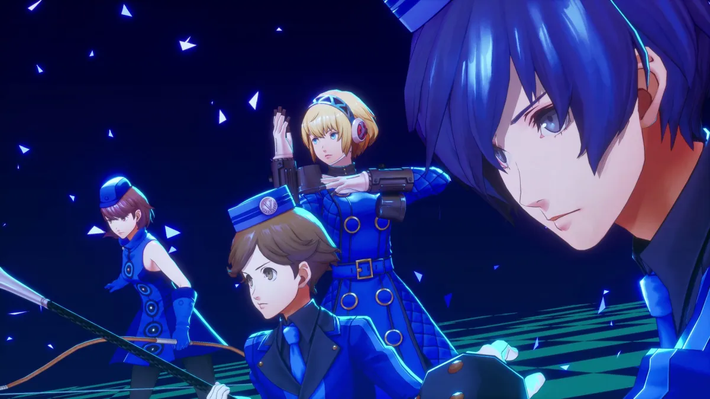
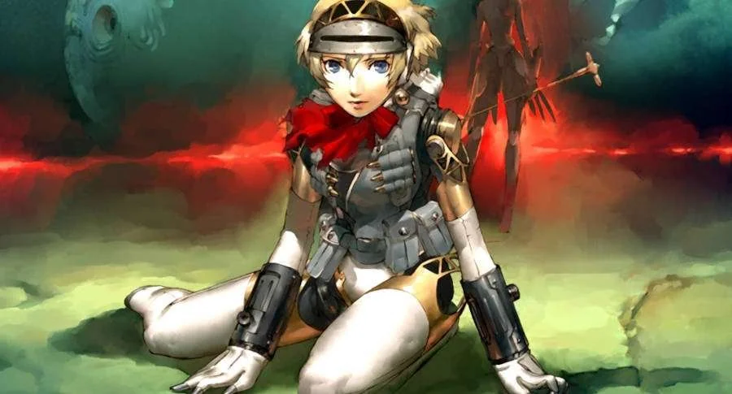

El capitulo final de Persona 3 Reload
Despues de desvelar los misterios de la hora oscura y el Tartaro, los miembros de S.E.E.S se ven atrapados en un bucle temporal donde el mismo dia nunca termina. Con la llegada de una androide extraña llamada Metis y una puerta extraña hacia el "Abismo del tiempo", el grupo tiene algo que hacer una vez mas para llegar al fondo de todo esto.
Conoce a Metis
Es el nuevo personaje jugable en el epilogo "Episode Aigis - The Answer". Es un arma anti-sombras al igual que Aigis y la trata como si fuera su hermana. Llega al Dormitorio Iwatodai durante el bucle infinito del 31 de Marzo y la apertura de la puerta de "El Abismo del Tiempo". ¿Estara relacionada a ello?
PASE DE EXPANSION
Oleada 1:
12/Marzo/2024
Paquete de Musica de Persona 4 y 5

Oleada 2:
Mayo/2024
Paquete de Trajes Estilo Velvet Room
Oleada 3:
Septiembre/2024
Episode Aigis - The Answer
